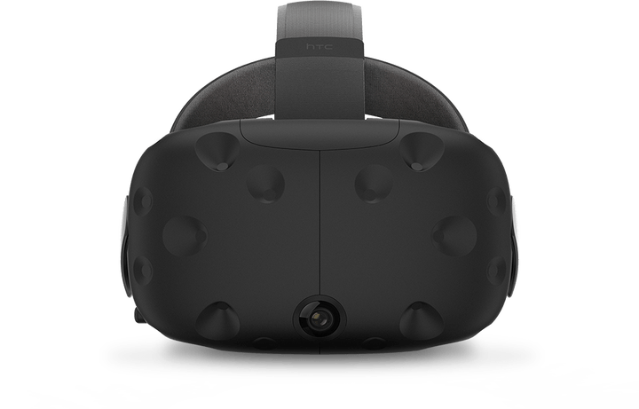
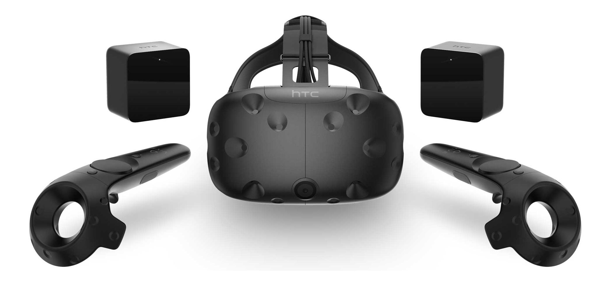
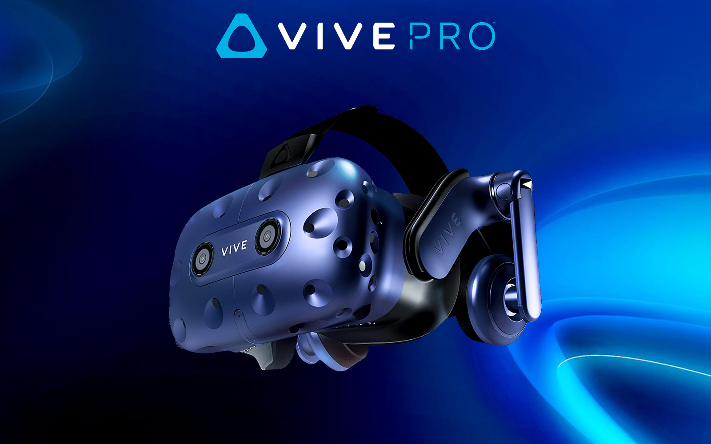

HTC Vive er sýndarveruleika búnaður smíðaður af HTC, fyrrverandi símafyrirtæki, í samstarfi við Valve. HTC Vive sýndarleikabúnaðurinn er almennt talinn besti á markaðinum.
HTC - VIVE
HTC Vive kom út á notendamarkaðinn fimta apríl 2016. HTC Vive kemur með safni fylgihluta m.a. Vive Headsettið sjálft, tvær Vive fjarstýringar og tvær staðsetningastöðvar ("Base stations"). Einnig fylgja allar snúrur með.
Markaðshópur HTC Vive er aðalega ungir karlmenn, drengir sem eiga efni á því að kaupa sinn eigin búnað og tíman til þess að eyða. HTC Vive er aðalega notað í tengingu við tölvuleiki, en einnig er búnaðurinn frábær í kvikmyndir og listir.
HTC Vive Pro er nýjasta græjan frá HTC og kom út 5 apríl á þessu ári(2018). Helstu breytingarnar eru m.a. þráðlaust headsett, bettri upplausn, og sterkari festing þó hefur fólk hvartað undan því að þessi nýja græja er þyngri en sú gamla. Þetta skapar vandamál í leikum sem maður hreyfir sig hratt og mikið þar sem tækjið getur kastast til.
